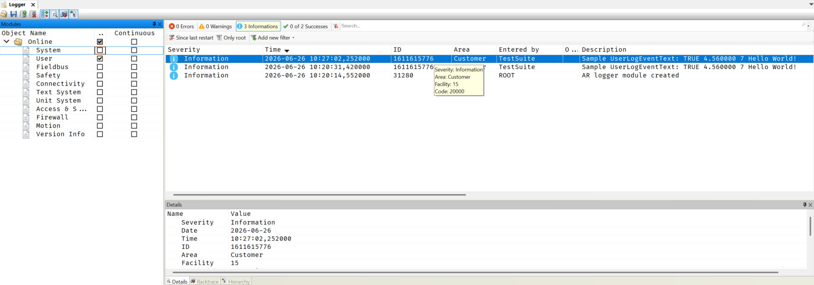

UserLogBasic, UserLogAdvanced, and UserLogCustom all accept an input message that is written to the ASCII Data section of a logbook record. UserLogEventText instead writes binary-encoded data to a record and relies on a localized event text to render the message in the Description section of the logbook.
Like UserLogCustom, UserLogEventText can be used to write to any user logbook.
It is required to use the Text System and match this function's Event ID with a Text ID in the namespace User/EventLog. The localized text entry defines the message and may contain placeholders {1}, {2}, {3}, ... that are replaced with the binary-encoded data at runtime. More information is available in the example below.
The timestamp of the record is automatically set with the time at the call of this function. If Object is left NULL or empty, UserLogEventText will automatically read the software object (program) from which this function was called.
Depending on UserLog's current severity level, set by UserLogSetSeverityLevel, this function's message can be suppressed. If suppressed, nothing is written to the logbook and the function returns zero.
Unlike UserLogAdvanced, the Message input is not the displayed text. Instead, it is a list of format specifiers that define only the order and type of the binary-encoded arguments. Each specifier consumes the next entry of its type from the Values structure and is encoded as a separate argument, referenced in order by the event text's placeholders ({1}, {2}, ...).
%b BOOL (encoded as TRUE or FALSE)%f (or %r) REAL (double)%i (or %d) DINT (signed long)%s STRINGThere are up to USERLOG_FORMAT_INDEX + 1 entries of each data type. Any characters in Message other than the % specifiers are ignored.
If an error occurs during execution, an automatic message will be written to the User logbook with a description of the error. The function will return zero.
In this example, a localized text file and text system configuration are setup to accomodate this function's message written to the logbook record's description.
The text ID 1611615776 and English text Sample UserLogEventText: {1} {2} {3} {4} are chosen for this example. The four placeholders are replaced by the four binary-encoded arguments, in order, as defined by the specifiers in Message and supplied through Values.


VAR
FormatValues : UserLogFormatType;
END_VAR
FormatValues.b[0] := TRUE;
FormatValues.f[0] := 4.56;
FormatValues.i[0] := 7;
FormatValues.s[0] := 'Hello World!';
UserLogEventText('$$arlogusr', USERLOG_EXAMPLE_TEXT_ID, 0, '', '%b %f %i %s', FormatValues);
VAR
FormatValues : UserLogFormatType;
END_VAR
#include <string.h>
#include <stdbool.h>
FormatValues.b[0] = 1;
FormatValues.f[0] = 4.56
FormatValues.i[0] = 7;
strcpy(FormatValues.s[0], "Hello World!");
UserLogEventText("$arlogusr", USERLOG_EXAMPLE_TEXT_ID, 0, NULL, "%b %f %i %s", &FormatValues);